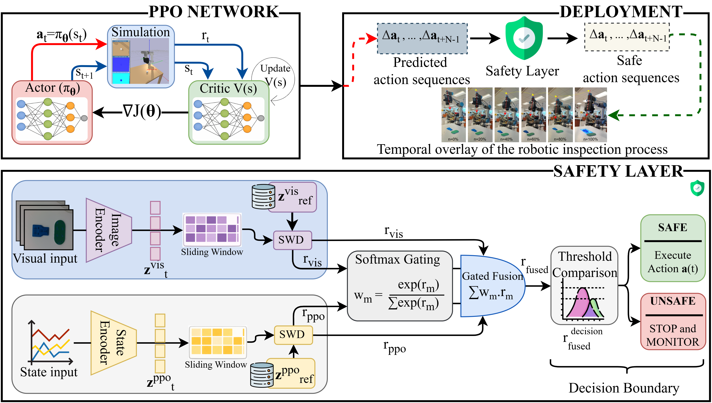
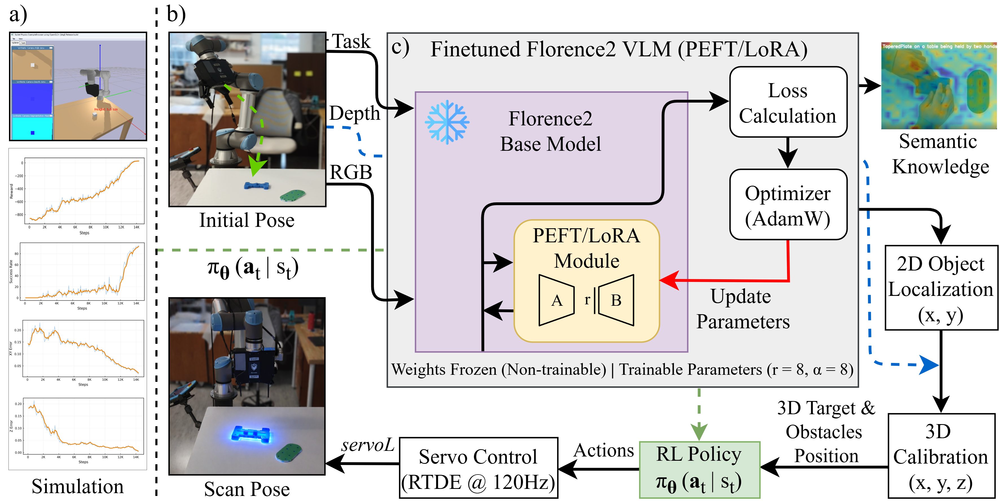

Abstract
Robotic systems are increasingly deployed in industrial inspection to automate precision-critical tasks such as dimensional verification, surface inspection, and quality assurance. Robotic inspection systems are adopting reinforcement learning (RL) to generate flexible and efficient inspection motions in unstructured manufacturing environments. However, RL policies trained under nominal conditions often fail silently when deployed in the presence of perceptual disturbances, environmental changes, or unforeseen interactions, posing significant safety risks during real-world operation. Existing safe RL approaches primarily enforce safety through constrained optimization during training, but lack mechanisms for detecting epistemic uncertainty arising at runtime. This paper presents a novel Safety-Aware Multi-Modal Out-of-Distribution (SMOOD) framework that augments RL-based control with runtime multi-modal out-of-distribution (OOD) detection for robotic inspection. SMOOD decouples task learning from safety enforcement by introducing a latent-space monitoring layer that jointly analyzes proprioceptive dynamics and semantic visual representations extracted from a vision-language model (VLM). Deviations from nominal behavior are detected using distributional distance metrics and fused to mediate policy execution in real time. The proposed framework is evaluated on a UR5e robotic inspection platform performing inspection-oriented motions. Experimental results demonstrate that SMOOD enables earlier OOD detection and safer task execution compared to single-modality baselines.

Methodology
The inspection task is formulated as a continuous-state Markov Decision Process (MDP), where a control policy \( \pi_\theta(a_t \mid s_t) \) drives the UR5e tool center point (TCP) to a scan-ready pose. Given a detected target position \( (x_o, y_o, z_o) \) with surface height \( h_o \), the desired inspection goal is defined as \( g = [x_o,\; y_o,\; z_o + h_o + \Delta] \), where \( \Delta \) denotes the scanner stand-off distance. The policy is trained in simulation using Proximal Policy Optimization (PPO) with an actor-critic architecture. Actions are bounded Cartesian TCP increments, and the reward function promotes convergence to the inspection goal while penalizing excessive velocity and collisions to ensure smooth and safe motion. During deployment, actions are streamed to the physical robot and SMOOD enforces safety at runtime through a decoupled multi-modal OOD detection layer. RGB-D observations \( I_t \) are encoded into a visual latent \( z_t^{\mathrm{vis}} \) using a vision-language model (VLM), while an intermediate actor feature provides a proprioceptive latent \( z_t^{\mathrm{ppo}} \). For each modality \( m \), distributional deviation from nominal behavior is quantified using the Sliced Wasserstein Distance (SWD):
$$ \mathrm{SWD}_t^{m} = \frac{1}{K}\sum_{k=1}^{K} W_1\!\left( \langle \mathcal{Z}^{m}_{\mathrm{ref}}, \theta_k\rangle,\; \langle \mathcal{Z}^{m}_{t}, \theta_k\rangle \right) $$
where \( \theta_k \) denotes the \( k \)-th random projection direction sampled from the unit hypersphere, and \( \langle \mathcal{Z}, \theta_k \rangle \) represents the one-dimensional projection of the latent distribution onto \( \theta_k \). The operator \( W_1(\cdot,\cdot) \) denotes the 1-Wasserstein distance between the resulting one-dimensional projected distributions. Since SWD depends on stochastic projection directions, the resulting modality scores are smoothed using an uncertainty-aware moving average, fused via softmax gating, and conservatively thresholded to pause execution under OOD conditions and automatically resume once the system returns to the in-distribution region.

Deployment
At deployment time, the reinforcement‑learning policy trained in simulation is deployed to physical envionment via RTDE at 120 Hz, and must operate safely in the real world. SMOOD accomplishes this by inserting a safety layer between the policy and the robot controller. The safety layer monitors multi‑modal latent representations at every time step, computing distributional distances from a reference set of nominal latents. When the fused distance exceeds a learned threshold, the layer commands the robot to pause, preventing unsafe interactions. Once the system returns to the in‑distribution region, the policy’s commands are allowed to pass through and execution resumes automatically.

Results
SMOOD was evaluated on a UR5e robotic platform performing surface inspection with a 3D scanner. The policy was trained in simulation under nominal conditions and deployed with the safety layer active only at runtime. Comparative experiments, tabulated in Table 1, against no‑safety and single‑modality baselines show that the proposed framework detects out‑of‑distribution events earlier and improves task reliability. In particular, fusing visual and proprioceptive cues yields a robust decision boundary that reduces false detections and shortens downtime.
The evaluation highlights three key contributions: (1) the first runtime safety architecture tailored for reinforcement‑learning‑based robotic inspection; (2) a multi‑modal out‑of‑distribution detection strategy that fuses proprioceptive dynamics with semantic visual embeddings; and (3) real‑world validations demonstrating improved detection latency, recovery robustness and overall task success.
| OOD Scenarios | Methods | OOD Detection Delay | ID Recovery Delay | OOD Detection Success Rate | ID Recovery Success Rate | Task Success Rate | Total Episode Time |
|---|---|---|---|---|---|---|---|
| Visual occlusion | No safety filter | - | - | 0 | 0 | 0 | - |
| Vision-only | 4.73 ± 0.58 | 3.95 ± 1.14 | 1 | 1 | 1 | 72 | |
| Proprio-only | - | - | 0 | 0 | 0 | - | |
| Fused | 3.33 ± 0.85 | 3.21 ± 1.49 | 1 | 1 | 1 | 63 | |
| Workspace violation | No safety filter | - | - | 0 | 0 | 0 | - |
| Vision-only | 3.30 ± 1.53 | 5.56 ± 1.56 | 0.8 | 0.6 | 0.4 | 230 | |
| Proprio-only | 1.66 ± 0.87 | 2.15 ± 1.02 | 0.6 | 0.4 | 0.8 | 102 | |
| Fused | 2.18 ± 0.96 | 2.66 ± 0.80 | 1 | 1 | 1 | 74 | |
| Obstacle blocking TCP | No safety filter | - | - | 0 | 0 | 0 | - |
| Vision-only | 9.10 ± 0.49 | 5.49 ± 1.15 | 0.6 | 0.6 | 0.4 | 102 | |
| Proprio-only | 5.36 ± 0.13 | 5.67 ± 1.03 | 1 | 0.8 | 0.6 | 94 | |
| Fused | 2.77 ± 1.05 | 2.61 ± 1.08 | 1 | 1 | 1 | 69 | |
| Lighting degradation | No safety filter | - | - | 0 | 0 | 0 | - |
| Vision-only | 4.07 ± 0.37 | 3.38 ± 0.82 | 1 | 1 | 1 | 65 | |
| Proprio-only | - | - | 0 | 0 | 0 | - | |
| Fused | 4.05 ± 0.51 | 3.26 ± 1.11 | 1 | 1 | 1 | 67 | |
Conclusion
The SMOOD framework demonstrates that safety monitoring for reinforcement learning can be treated as a deployment‑time problem rather than solely a training‑time constraint. By jointly analyzing visual and proprioceptive latents and using distributional distance metrics for out‑of‑distribution detection, SMOOD enables robotic inspectors to pause and resume autonomously in the presence of disturbances. Future work could explore richer multi‑modal representations, adaptive thresholding and integration with recovery policies to further enhance autonomy and safety.
BibTeX
@inproceedings{smood2026,
title = {SMOOD: Safety-Aware Multi-Modal Out-of-Distribution Detection for Reinforcement-Learning-Based Robotic Inspection},
author = {Silwal, Nitesh and Sun, Hongyue},
year = {2026}
}